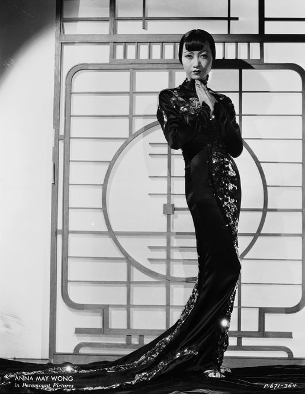
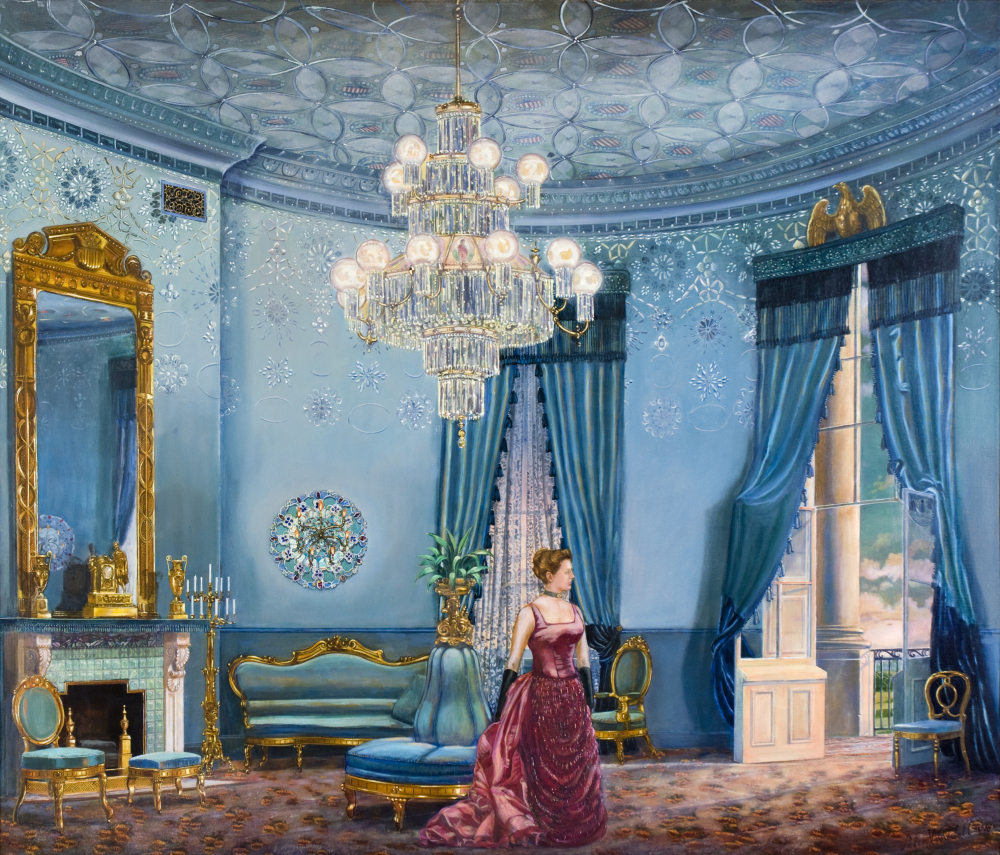
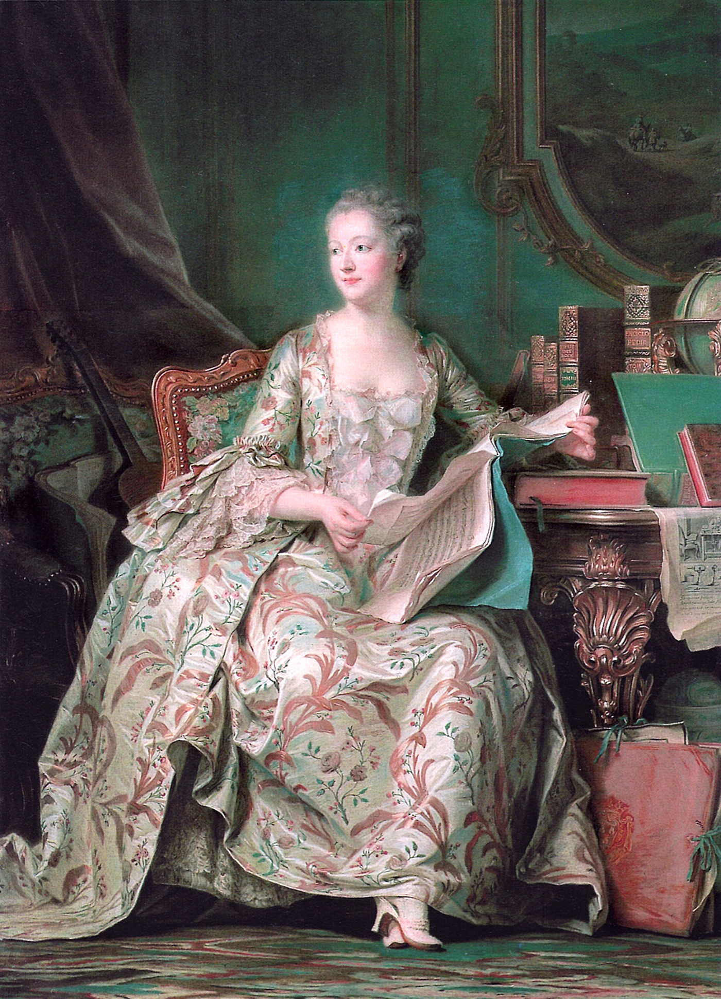
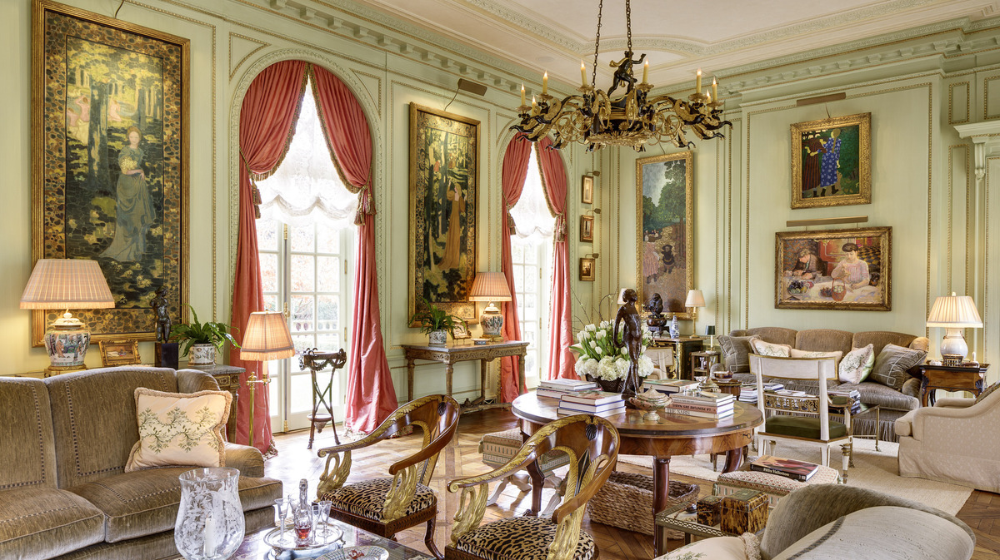
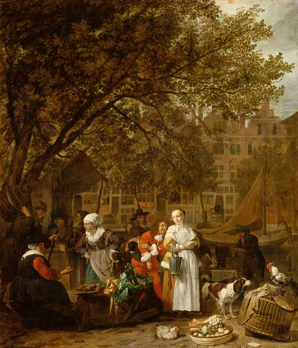
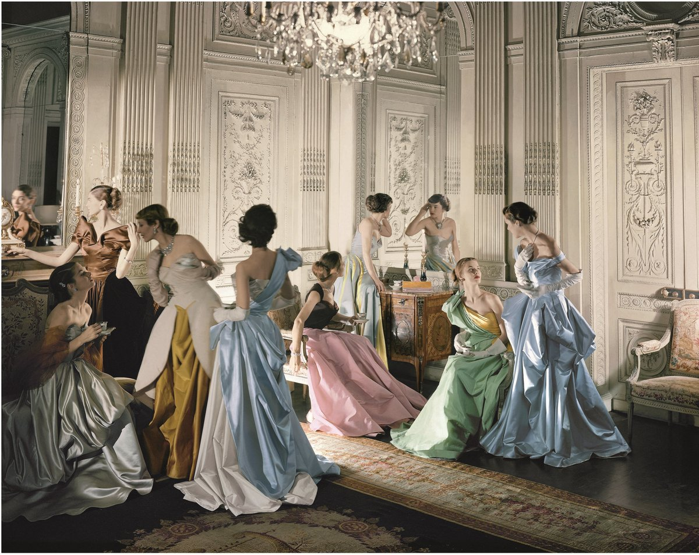
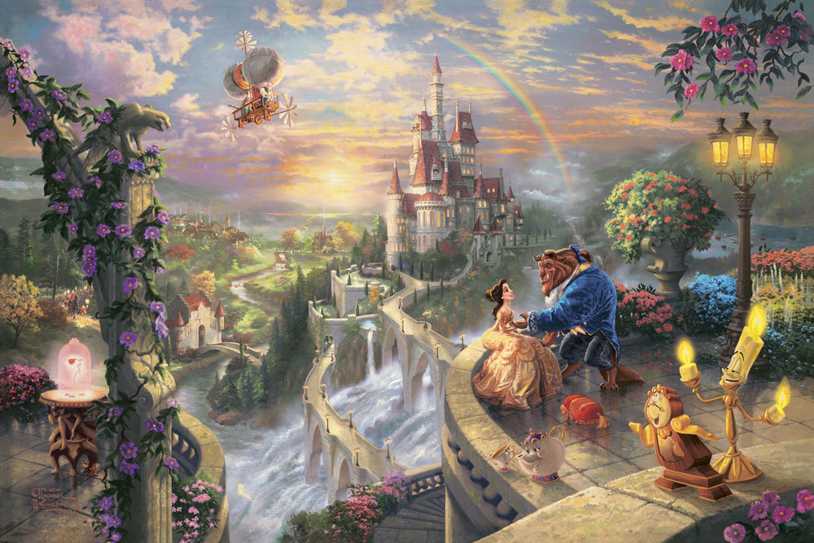
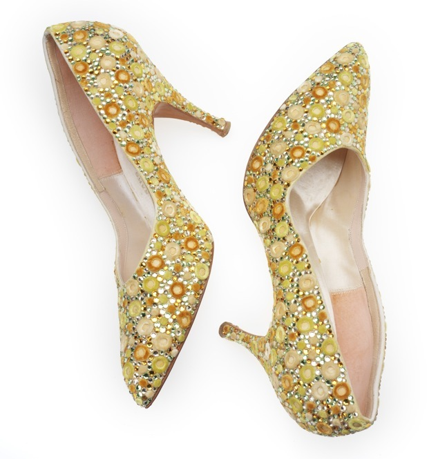
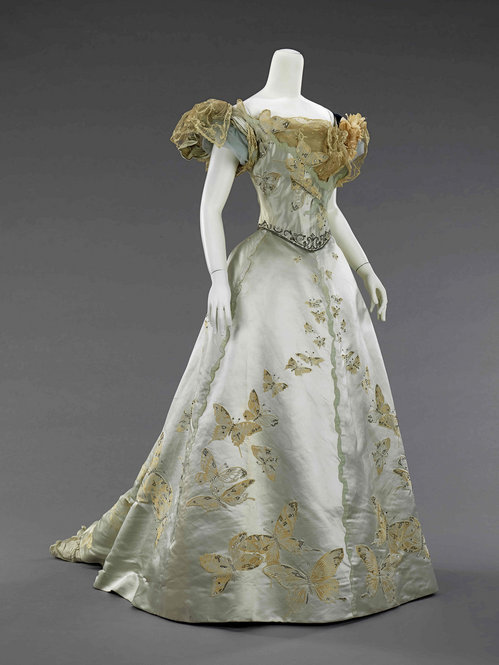

Content

(1) In the 1930s, the U.S. began to define the look and style of the day, in part because of the impact of one of America's greatest exports — Hollywood films. Chinese-American movie star Anna May Wong epitomizes the slinky glamour of the decade in a costume by Travis Banton.

(2) Grover Cleveland, the only President to get married in the White House, married 21-year-old Frances Folsom, above, in the Blue Room in 1886. The blue furniture, as shown in Waddell's painting, Something Blue, is still in the White House collection.

(3) Jeanne Antoinette Poisson, Marquise de Pompadour, may be best known as King Louis XV's Chief Mistress. But she was also a highly educated tastemaker, a patron of the arts, and an artist in her own right.

(4) Spencer and Marlene Hays' collection of French art usually adorns the walls of their Nashville home, an exact replica of a French palace. But for a few months, those pieces are back in their country of origin, on loan to the Musee d'Orsay.

(5) Gabriel Metsu's early works depict rustic or biblical scenes created in his hometown, Leiden. Once he moved to Amsterdam, he depicted more cosmopolitan scenes to meet the tastes of the city's sophisticated art market. Above, Vegetable Market in Amsterdam (circa 1657-1661).

(6) This famous 1948 photo by Cecil Beaton shows a group of young models in Charles James gowns.

(7) Beauty and the Beast Falling in Love is a 2010 painting from Kinkade's Disney Dreams Collection. He says in his paintings for Disney, he has "attempted to portray a panorama of the entire movie, rather than an individual scene."

(8) Shoes, 1960s, Saks Fifth AvenueSilk, rhinestone, satin weave, cut warp pile, embellished

(9) An extravagant French ball gown made of blue silk satin, sequins, rhinestones, beads and metallic [word missing]. In the late 19th century, American women were still taking their style cues from Europe.
Posted on 2020-08-11 15:06:26